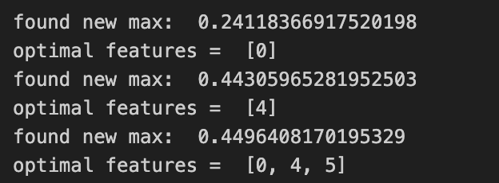
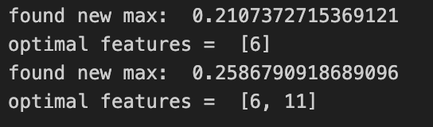
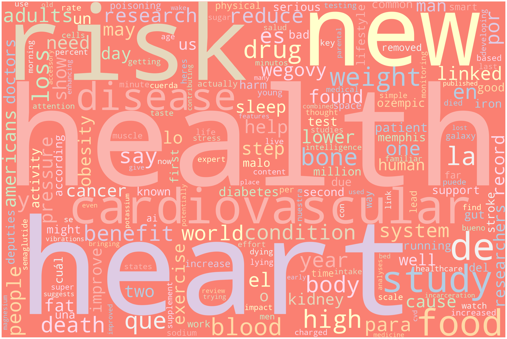
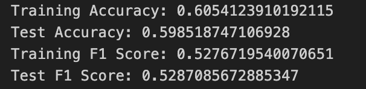
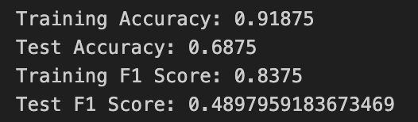

Naive Bayes is a probabilistic classification algorithm anchored in Bayes’ theorem. It calculates the likelihood of a class based on given features, operating under the simple yet often effective assumption that all features are independent. This “naive” approach aims to determine the most probable category for a data instance, leveraging the theorem’s mathematical principles for both its simplicity and accuracy.
In this project, the primary objective is to leverage the Naive Bayes classification method to discern patterns related to cardiovascular risk. Given its foundation in Bayes’ theorem, the algorithm will provide a probabilistic understanding of the data, potentially offering a unique perspective on the complex interplay of factors leading to cardiovascular ailments. By analyzing the individual and combined effects of various health metrics and lifestyle choices, we aim to develop a robust model that can predict cardiovascular risk with a high degree of accuracy.
Variants of Naive Bayes
There are several flavors of Naive Bayes, tailored for different types of data:
Gaussian Naive Bayes: Ideal for handling continuous data, this variant assumes that data for each class is distributed according to a Gaussian (normal) distribution. For data that appears to follow a normal distribution, Gaussian Naive Bayes is typically preferred.
Multinomial Naive Bayes: Best suited for features representing counts or discrete frequency data, it’s often the go-to for text classification tasks. When working with count data, such as word frequencies in text, Multinomial Naive Bayes shines.
Bernoulli Naive Bayes: Tailored for binary data, this approach models features using the Bernoulli distribution. For binary or Boolean features, Bernoulli Naive Bayes is often the best choice.
Prepare your Data for Naive Bayes
To successfully implement Naive Bayes classification, labeled text or recorded data relevant to the project is crucial. After obtaining and carefully cleaning this data set, it must be divided into training, validation, and test subsets. This policy partitioning plays a fundamental role in machine learning. The training set is used to build the model, the validation set aids in refining the model through hyperparameter tuning, and the test set, serving as an unseen dataset, assesses its effectiveness by comparing predicted outcomes with actual results. Such partitioning ensures that the model actually recognizes patterns and does not just memorize the data, or called overfitting. This approach enhances the model’s resilience and credibility when new, unfamiliar data is introduced.
Feature selection
Feature selection is vital for the success of a data science project, aiming to pinpoint the most relevant dataset attributes. Proper feature selection boosts model performance, minimizes overfitting, and clarifies result interpretation.
Record Data
For record data we define the following metric for the feature selection process.
\(\overline{r_{xy}}\) is the average value of all input-output (feature-target) Spearman correlations
\(\overline{r_{xx}}\) is the average value of all input-input (feature-feature) Spearman correlations
Note: The vertical lines denote absolute values
Merit refers to a score or measure that quantifies the quality or importance of a subset of features. It’s a way to evaluate how well a particular subset of features might perform in a predictive model.
I iterated through all possible subsets of feature variables and calculated the Merit information for each one. The subset with the highest Merit was then selected. Given the relatively high dimension of features, considering all potential subset combinations in one loop would be cumbersome. As a solution, I divided the search into two parts: first, iterating through the initial six features, and then separately looping through the remaining six features.
Code
import pandas as pdcardio = pd.read_csv("../Data/01-modified-data/cardiovascular_numeric_final.csv")cardio = cardio.drop(columns=['Unnamed: 0', 'id','cardio'])cardio.head()
age
gender
height
weight
ap_hi
ap_lo
cholesterol
gluc
smoke
alco
active
bmi
0
50
2
168
62
110
80
1
1
0
0
1
21.97
1
55
1
156
85
140
90
3
1
0
0
1
34.93
2
52
1
165
64
130
70
3
1
0
0
0
23.51
3
48
2
169
82
150
100
1
1
0
0
1
28.71
4
48
1
156
56
100
60
1
1
0
0
0
23.01

Part 1

Part 2
Based on the graphs presented earlier, features 1, 5, 6, 7, and 12 have been selected according to the Merit selection results. These features correspond to the subsequent variables.
In analyzing the text data, I begin by using a whitespace tokenizer to segment the text into distinct words and then convert them to lowercase to ensure uniformity during training. The corpus contains 3622 unique words. The training matrix for the x variable is converted into a binary format with dimensions (400, 3622). Here, each column signifies a distinct word, with its values—0 or 1—indicating absence or presence, respectively.
During the feature selection process, I iterated over the training matrix, examining all words across 100 iterations, each encompassing up to 1000 features. Although the total features count to 3622, I capped the maximum at 1000 for feature selection purposes. My selection focused on the features delivering the highest test accuracy. Settling on the top 100 features, I achieved a test accuracy of 76.25%. In the subsequent sections detailing model prediction results, these 100 features will be the basis for training.

Text World Cloud
Naïve Bayes (NB) with Labeled Record Data
The dataset is divided into a training set and a test set using an 80/20 split. This division helps mitigate the risk of overfitting by not training the model on the entire dataset and provides a separate unseen test set to evaluate model performance. Since there were no hyperparameter tuning steps for my Naive Bayes Model, a validation dataset was not created during the data splitting step.
Overfitting and underfitting are prevalent challenges in the model training process, especially in supervised learning. Underfitting occurs when a model is too simplistic, failing to capture significant patterns within the dataset. This results in high bias and low variance, typically leading to subpar accuracy on both training and test data. Conversely, overfitting arises when the model is excessively complex, perhaps perfectly fitting the training data but faltering on new, unseen data. Such models often exhibit high training accuracy but poor test accuracy. From a bias-variance tradeoff perspective, overfit models exhibit low bias but high variance, as they may not generalize well to different datasets.
In my model, I carried out feature selection to mitigate the issues of overfitting and underfitting. I chose the features that offer the most information related to the response variable “cardio”. The optimal features selected are “age”, “ap_hi”, “ap_lo”, “cholesterol”, and “bmi”.
The Multinomial Naive Bayes model was utilized for this analysis. I trained the model using the training dataset and subsequently made predictions on the test set. These predictions were then compared with the actual labels to derive performance metrics, including accuracy and F1-score.
I achieved the following accuracy and F1-score values for the training and test data.

Accuracy & F1-score
Both the training and test accuracies are modest, averaging around 60%. For a binary classification, even a random guess could achieve about 50% accuracy, highlighting the limited performance of the Naive Bayes model on this dataset. The F1-scores for the training and test sets hover around 0.528, a value considerably distant from the ideal score of 1 for high-performing models. Given the modest accuracy observed for both training and test data, it’s unlikely that the model experienced either overfitting or underfitting during the training process.
Here are the confusion matrices derived from both the training and test sets. 1 is defined as positive.
Precision quantifies the number of correctly predicted positive instances relative to the total number of predicted positives. Recall, alternatively termed Sensitivity or True Positive Rate, quantifies how many of the true positive instances were successfully predicted. In the context of my research, the primary aim is to predict cardiovascular diseases. Consequently, it’s crucial to minimize False Positives, representing individuals diagnosed with cardiovascular diseases but incorrectly predicted otherwise. The recall values for both training and test datasets hover around 0.46, suggesting that nearly half of the true positives are overlooked.
In summary, the performance of the Naive Bayes model on the record data falls short, particularly in terms of recall and accuracy. The selected features - “age,” “ap_hi,” “ap_lo,” “cholesterol,” and “bmi” - appear inadequate for effective cardiovascular disease prediction. Given this model’s underwhelming metrics, exploring alternative machine learning techniques for better model construction is recommended. While we will retain the Naive Bayes results for benchmarking purposes, they will likely be referenced in the Naive Bayes section of any forthcoming research papers. Ultimately, a comparative table will feature these metrics alongside those of other models, enabling a more comprehensive assessment.
Naïve Bayes (NB) with Labeled Text Data
For the text data, I possess a sample of 400 records. I’ve partitioned this dataset into training and test sets, maintaining an 80/20 split, akin to the record data. The model, trained on this training set, is tasked with predicting whether the topic pertains to cardiovascular disease. I’ve opted for the Multinomial Naive Bayes model given its proven prowess in text classification tasks. The selected features consist of the first 100 words from the entire corpus of 3,622 words.
I achieved the following accuracy and F1-score values for the training and test data.

Accuracy & F1-score
The model achieved a training accuracy of 0.91875 and a test accuracy of 0.6875. The notable disparity between these accuracies suggests that the model may be overfitting the training data. This overfitting could be attributed to the diverse nature of the text data and the limited dataset size. Increasing the number of data records in the future could mitigate this issue.
Comparatively, the test accuracy for text data is nearly 70%, markedly higher than that of the record data. This could highlight the inherent strength of the Multinomial Naive Bayes model in text classification tasks. However, the F1-scores provide a more nuanced view: with a training F1-score of 0.8375 and a test F1-score of 0.49, the model’s performance still remains suboptimal, especially considering that the test F1-score is even lower than that for record data.
Upon analyzing the precision and recall scores, it’s evident that the scores for the training data substantially outpace those for the test data. This further highlights the previously noted overfitting issue. Specifically, the test data’s precision is 0.4615, falling below the halfway mark. This implies that a significant portion of the positives predicted are erroneous. Although the recall score fares slightly better at 0.5217, both these scores emphasize the model’s limited efficacy on the test data. Notably, the recall consistently surpasses the precision for both datasets, aligning with our research’s central objective of precisely identifying all true positives.
Given the nature of our research, the emphasis will remain on record data, relegating text data to a secondary role. The inherent structure of text data makes its results more challenging to decipher. Any significant findings pertaining to this will be documented in the Naive Bayes section, should this research culminate in a publication.
To sum up, while the Naive Bayes model for text data displays a commendable test accuracy, it grapples with overfitting, as evidenced by the stark performance disparity between training and test datasets. Examining the precision and recall metrics—both hovering between 50% and 60%—underscores the model’s underwhelming performance. Since the datasets for text and record data are intrinsically distinct, direct comparisons might not yield substantial insights. Moving forward, our research will primarily concentrate on the record data.